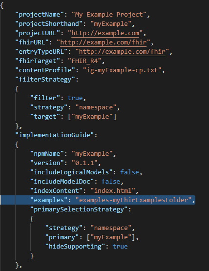
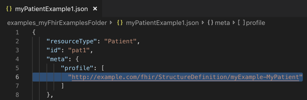

CIMPL In-Depth Tutorial
Table of Contents
Introduction
CIMPL (Clinical Information Modeling Profiling Language) is a specially-designed language for defining clinical information models. It is simple and compact, with tools to produce Fast Healthcare Interoperability Resources (FHIR) profiles, extensions and implementation guides (IG). Because it is a language, written in text statements, CIMPL encourages distributed, team-based development using conventional source code control tools such as Github. CIMPL provides tooling that enables you to define a model once, and publish that model to multiple versions of FHIR.
Purpose
This is an extensive tutorial, meant to expose the reader to many aspects of CIMPL and its tooling (SHR-CLI).
Intended Audience
The CIMPL In-Depth Tutorial is targeted to any person who wants to create a FHIR IG, wants to learn how to leverage CIMPL to accomplish that goal, and is comfortable with programming languages. Familiarity with FHIR is helpful as the tutorial references FHIR artifacts (such as resources, profiles, etc.).
Prerequisite
This guide assumes you have:
- Installed the latest version of the SHR-CLI software as documented in CIMPL Setup and Installation (preferably installed in the ~/cimpl/shr-cli directory)
- A text editor to edit you CIMPL files (preferably VSCode with the vs-code-language-cimpl extension, but not required)
- Reviewed the Hello World Tutorial.
Initial Setup
This tutorial is focused on how to create a model that will be used as input to a FHIR IG. Supporting configuration and core data type files have been defined for you.
The following directory structure is assumed:
Directory: cimpl
|_ shr-cli
Note: The top level directory where SHR-CLI was installed might differ. If so, you must reference the relative directory where you have installed shr-cli. Create a sub-directory under cimpl called myExampleC6. Now your directory structure should look like this:
Directory: cimpl
|_ shr-cli
|_ myExampleC6
Copy the following files to the myExampleC6 sub-directory. The files contain global definitions for code systems, value sets, maps to FHIR R4 elements and examples. These file names are hyperlinked for retrieval:
| File | Purpose |
|---|---|
| obf-datatype.txt | Complex data type definitions |
| obf-datatype-vs.txt | Value sets supporting the data types |
| obf-datatype-map-r4.txt | Maps between CIMPL data types, complex data types and FHIR 4.0 data types |
| ig-myExampleR4-config.json | Configuration settings supporting IG creation |
Modeling Process
This tutorial guides you in a step by step process to build a basic clinical data model that directly references FHIR resources. It also illustrates the modeling practice briefly described in the CIMPL Authoring Guide.
The steps are briefly summarized here:
- Define use case(s)
- Create a high-level conceptual model
- Create a data element requirement list
- Create the logical model
- Create logical element-to-FHIR mappings
- Generate the FHIR IG
- Create FHIR examples for each profile (optional)
Define Use Cases
For our example, we'll focus on obstructive sleep apnea (OSA). The goal is to measure the prevalence of patients diagnosed with OSA, stratified by age groups. A secondary goal is to further identify the population by gender. Electronic Health Records (EHRs) are the primary source for this information.
Create a High-level Conceptual Model
A conceptual diagram is shown in the figure below:

Diagrams of this sort may be valuable to the community reviewing and using the IG, especially when the model is complex, and can serve as a basis to drive further design of the model.
Create a List of Data Elements
Creating a list of data elements helps to refine the contents, data types, cardinality, and clinical terminologies needed in the model. It helps at this stage to research existing standards and related models, but for this example, we won't look beyond FHIR resources for inspiration.
The table below is a high level summary of the elements we need in this use case:
Entity |
Data Element Name |
Cardinality | Data type | Value Set (if applicable) |
|---|---|---|---|---|
Patient |
BirthDate |
1..1 |
date |
|
Patient |
Gender |
0..1 |
concept |
HL7 Administrative Gender |
OSADisorder |
OSADisorderCode |
1..1 |
concept |
SNOMED codes for OSA |
OSADisorder |
OSADisorderStatus |
0..1 |
concept |
HL7 status codes |
CIMPL's concept data type encompasses any enumerated or terminology-coded data types. FHIR CodeableConcept, Coding, and code data types are all concept data type in CIMPL.
Create the Logical Model in CIMPL
In this example, the only part of the CIMPL Class Library we are using is the datatypes.
CIMPL has three main files involved in the creation of a logical model.
The Class file is the place to start. Create a new file under the MyExampleC6 subdirectory called myExample.txt.
Type in the CIMPL header information designating the namespace and version of the DataElement parser:
Grammar: DataElement 6.0
Namespace: myExample
Description: "CIMPL Tutorial: myExample for an OSA patient."
Uses: obf.datatype
Where:
Grammaris a required keyword indicating the parser to be used, in this caseDataElement 6.0Namespace, also required, is a short name for your project, IG, or module you are defining. This should be a meaningful and easily recognizable name.Usesis the list of all namespaces your model elements will reference. For our example, we set this toobf.datatype.
Next, we will create our first class, called MyPatient, that we determined will have the following properties:
MyBirthDate(a required field that only accepts one value)MyGender(an optional field that we want to have the receiver accept, if the value is known.)
Let's build our logical model. Add the following lines below your CIMPL header:
Entry: MyPatient
Description: "An individual awaiting or under medical care and treatment. (source: Webster's Dictionary)"
Property: MyBirthDate 1..1
Property: MyGender 0..1
Element: MyBirthDate
Description: "The date when the patient was born."
Value: date
Element: MyGender
Description: "Either of the two sexes (male and female), especially when considered with reference to social and cultural differences rather than biological ones. (source: Oxford Dictionary)"
Value: concept from http://hl7.org/fhir/ValueSet/administrative-gender
We now have a Patient entity called MyPatient which has 2 properties: MyBirthdate and MyGender. The FHIR Patient base resource has these attributes; for purposes of this tutorial we will not consider that information -- this won't always be the case.
We determined from our clinical requirements that MyBirthDate has a data type of date, that is one of the primitive data types supported in CIMPL. This data type is expressed with the Value keyword.
We also determined that MyGender has a data type of concept that allows us to constrain the allowable values to a value set containing: male, female, and unknown. We find that HL7 has a matching value set identical to our requirements so we'll use that one for the Value.
Now let's work on the ObstructiveSleepApnea Disorder entity. Add the following text into the file:
Entry: ObstructiveSleepApneaDisorder
Description: "Obstructive sleep apnea (OSA) is a sleep-related breathing disorder that involves a decrease or complete halt in airflow despite an ongoing effort to breathe. It occurs when the muscles relax during sleep, causing soft tissue in the back of the throat to collapse and block the upper airway. (source: American Academy of Sleep Medicine)"
Property: OSADisorderCode 1..1
Property: OSACurrentStatus 0..1
Element: OSADisorderCode
Description: "The diagnosis or problem list code assigned to the OSA disorder."
Value: concept from OSADisorderVS
Element: OSACurrentStatus
Description: "State of the diagnosis or problem list item."
Value: concept from OSACurrentStatusVS
The entity named ObstructiveSleepApneaDisorder contains two Properties to define the OSADisorderCode and OSACurrentStatus. Both Properties have been defined as Elements with a Value (data type) of concept and reference value sets that need to be defined. If you are familiar with the FHIR Condition resource you will notice that the Elements in your model replicate two Condition elements. At a later point in this tutorial, the Elements will be mapped to FHIR resource elements.
Create Custom Value Sets
We need to define the value sets, OSADisorderVS and OSACurrentStatusVS.
Create a new file called myExample-vs.txt underneath the myExampleC6 directory, and add the CIMPL value set header information below:
Grammar: ValueSet 5.1
Namespace: myExample
Where:
Grammaris the keyword that specifies the file is a Value Set file conforming to CIMPL value set parser version 5.1.Namespaceis the keyword whose value contains the namespace defined for your model. In this case, it'smyExample.
Next we specify the concepts in the value sets, as defined in our clinical data requirements. Add the following text below the CIMPL value set header information:
CodeSystem: SCT = http://snomed.info/sct
CodeSystem: STAT = http://terminology.hl7.org/CodeSystem/condition-clinical
ValueSet: OSADisorderVS
Description: "The list of disorders related to Obstructive Sleep Apnea."
SCT#1101000119103 "Obstructive sleep apnea of adult (disorder)"
SCT#1091000119108 "Obstructive sleep apnea of child (disorder)"
ValueSet: OSACurrentStatusVS
Description: "The current disease status of an OSA patient"
STAT#active "Active"
STAT#inactive "Inactive"
STAT#resolved "Resolved"
The CodeSystem keyword defines the code systems (e.g. SNOMED-CT, HL7 condition-clinical, ICD-10, etc.) the concepts in value sets are drawn from. The code systems are referred to by URLs. To learn more about code systems and the relationship to value sets, see https://www.hl7.org/fhir/codesystem.html.
The format for specifying each concept in the value set is as follows:
Format: CodeSystem Alias>#Code "Display"
Example: STAT#active "Active" where:
STATis an alias that represents the HL7 Condition Clinical code system assigned in theCodeSystemstatement#is a delimiter separating the code system and the codeactiveis the concept code"Active"is the display name associated with the concept.
The display name must follow rules as defined by the code system steward. For example, as documented in Using SNOMED-CT with FHIR, the best display is the preferred term in the relevant language or dialect, as specified in the associated language reference set.
Note: Code system aliases are required. Direct use of a URL or urn (e.g.,
http://terminology.hl7.org/CodeSystem/condition-clinical#active) is not supported in CIMPL.
Create Logical Model to FHIR mappings
Create a file called myExample-map-r4.txt under the myExampleC6 sub-directory, and copy the following header information to the top of the file:
Grammar: Map 5.1
Namespace: myExample
Target: FHIR_R4
Where:
Grammaris the version supported for the mapping grammarNamespaceis the name of the namespace for your logical model (same as used before)Targetis the FHIR release version targeted for mapping element*s in your logical model, one of the following values:FHIR_DSTU2,FHIR_STU_3, orFHIR_R4. Our maps will be to FHIR_R4. Specifying the target also configures the CIMPL tool chain to generate R4 StructureDefinitions.
While mapping, we ask the following questions:
- Is there a FHIR resource that is a good fit for our logical model entities?
- If yes, is there an equivalent FHIR attribute or extension for each of the
Propertiesin our logical model? - If there is an equivalent FHIR attribute, do the data types, cardinality constraints, and terminology bindings align?
For simplicity, we created the example such that the answer is yes to all questions. The MyPatient entity maps to the Patient resource, and ObstructiveSleepApneaDisorder maps to the Condition resource. Because we have specified our target map to be FHIR_R4, our maps target the R4 version.
Add the following statements to your Map file:
MyPatient maps to Patient:
MyBirthDate maps to birthDate
MyGender maps to gender
ObstructiveSleepApneaDisorder maps to Condition:
OSADisorderCode maps to code
OSACurrentStatus maps to clinicalStatus
The logical model Properties(defined in the Class file) map to equivalent FHIR attributes for each resource or profile we've chosen to reference in our model. Because FHIR profile rules allows further constraining and not loosening cardinality constraints and binding strengths, we can confirm that our Elements also satisfy those requirements.
Generate the FHIR IG
In this section, we cover some of the extra CIMPL configuration steps that might be needed to customize the output of your FHIR IG.
Specify FHIR MustSupport Elements
The CIMPL toolchain supports a custom configuration file called a Content Profile that allows you to define IG-specific parameters. This tutorial uses the feature that specifies Elements in your logical model to be MustSupport in FHIR.
Together with specified cardinality, the MS declaration can be interpreted as follows:
| Cardinality | MustSupport | Interpretation |
|---|---|---|
| 1..1 | any | required |
| 0..1 | yes | required if known |
| 0..1 | no | optional |
Create a file called ig-myExample-cp.txt under the myExampleC6 sub-directory. Paste the following code snippet into your file:
Grammar: ContentProfile 1.0
Namespace: myExample
MyPatient:
MyGender MS
ObstructiveSleepApneaDisorder:
OSADisorderCode MS
For our example, we have designated the MyGender and OSADisorderCode elements as MustSupport.
More information about Content Profile settings are found in the CIMPL Tooling Reference Guide.
Note: MustSupport renders as an S in a red box in FHIR IGs. _
Create a Homepage for the IG
Create a new file called index.html under the myExampleC6 directory. Copy the following contents in this page:
<h1>myExample Implementation Guide</h1>
<p>CIMPL Tutorial demonstrating how to create FHIR profiles and an IG.</p>
Configure the Output
For purpose of the tutorial's focus on modeling, we have already created a configuration file called ig-myExampleR4-config.json. You copied this file to the myExampleC6 directory at the start of this tutorial.
Let's review some highlights of the configuration file (click link to open). The table below shows a partial listing of fields in the supplied configuration file. More advanced configuration options are documented in the CIMPL Tooling Reference Guide.
| Parameter | Value | Meaning |
|---|---|---|
ProjectName |
My Example Project |
This will appear on the home page title of your generated IG. |
fhirURL |
"http://example.com/fhir" | The URL pre-pended to your StructureDefinition canonical URLs. |
contentProfile |
ig-myExample-cp.txt |
The name of the file that sets FHIR MustSupport flags. |
filterStrategy |
true |
Indicates that not all Entries in the logical model should be included in the IG. |
target |
[myExample] |
JSON array containing the namespace(s) targeted by the filtering strategy. |
indexContent |
index.html |
The file containing the IG homepage. |
Compile CIMPL
To create profiles, extensions, and other FHIR assets used in the IG, run the SHR-CLI tool.
- Open a command line terminal and navigate to the ~/cimpl/shr-cli directory (where you installed SHR-CLI)
-
Run the following command:
node . ../myExampleC6 -l error -o myExampleC6r4 -c ig-myExampleR4-config.json
Where:
nodeis the command that starts the SHR-CLI application.- The first dot
.represents the path to the SHR-CLI tool, in this case, the current working directory. The dot represents the current directory. ../myExampleC6is the path where your CIMPL modeling and configuration files are located. The double dot..represents the directory above the current working directory.- the
-lparameter anderrorvalue specifies logging to only show errors. - the
-oparameter andmyExampleC6r4value specify the name of the directory where you want to generate the IG output. - the
-cparameter andig-myExampleR4-config.jsonvalue specify the name of the CIMPL configuration file to reference for the output.
After you run this first command, as an interim check, navigate to the ~/cimpl/shr-cli folder. You should see a new subdirectory created called myExampleC6r4 that will eventually contain the StructureDefinition and html output of the generated IG. This is the value that was specified in the -o parameter in the above command.
Run the FHIR IG Publisher
-
From the same command line terminal, run the following command:
yarn run ig:publish -
Alternately, run the full command to specify the destination directory (following the
-igflag):java -jar myExampleC6r4/fhir/guide/org.hl7.fhir.publisher.jar -ig myExampleC6r4/fhir/guide/ig.json
Navigate to the ~/cimpl/shr-cli/myExampleC6r4/fhir/guide/output directory and open the index.html file in a browser. This displays the home page of the generated FHIR IG for your example project.

Add FHIR Examples
We're now going to add a FHIR example that conforms to our model. This step adds an example file to the directory you created in the first step. Since the details creating FHIR examples are out of scope for this tutorial, an example has been provided.
Create a subdirectory called examples-myFhirExamplesFolder under the myExampleC6 folder.
Directory: cimpl
|_ shr-cli
|_ myExampleC6
|_ examples-myFhirExamplesFolder
Copy the file myPatientExample1.json and its contents into the examples-myFhirExamplesFolder you created in the Compile CIMPL step.
Note: The FHIR example can contain content beyond the model, and still pass validation. What matters is, the requirements of the model are met.
Add the following line to your CIMPL configuration file within the implementationGuide JSON object:
"examples": "examples-myFhirExamplesFolder"
The following screenshot shows where to put this parameter within the CIMPL configuration file ig-myExampleR4-config.json:

Compile CIMPL and Run the FHIR IG Publisher
Because you changed the contents of your model to add an example, you need to recompile and regenerate the IG.
node . ../myExampleC6 -l error -o myExampleC6r4 -c ig-myExampleR4-config.json
yarn run ig:publish
Open the index.html file from the generated IG output in your browser and navigate to the Profiles tab and select the MyPatient profile.
You'll find a tab called Examples that contains a URL to the example within the examples-myFhirExamplesFolder.

So you might be thinking, How does the IG identify the profile for your example?
The answer is that the name of the related FHIR StructureDefinition for the profile is specified within the FHIR example.

The IG Publisher will match the canonical URL specified in the example, with what is specified in the IG. Note that the value of the profile parameter must match the canonical URL of the profile where the StructureDefinition is located in order for the example to appear.
Appendix - Document Conventions
| Style | Explanation | Example |
|---|---|---|
| Bold | A FHIR reserved word or specific resource | Condition |
Code |
A CIMPL term, phrase, example, or command | CodeSystem: LNC = http://loinc.org |
Italics appearing in a code block |
Indicates an item that should be substituted | Value only datatype |
| Italics | A file name, or general emphasis in text | obf-action.txt |
| Italics with bold highlight | Indicates a substring in the file name that should be substituted | ig-myigname-config.json |
| Leading Capitalization | CIMPL keywords or references that are capitalized; specific instances of FHIR artifacts | The Grammar keyword |
| Note: | Something to keep in mind about the current topic | Note: Value Set names must begin with an uppercase letter. |